Een van de ontwikkeling die plaatsvond bij het neolithicum was de kunst. Een voorbeeld hiervan is de megalithische kunst die verscheen in het midden-laat neolithicum. (4500 v.C. – 1500 v.C.)
 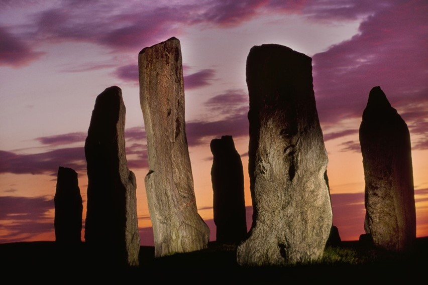
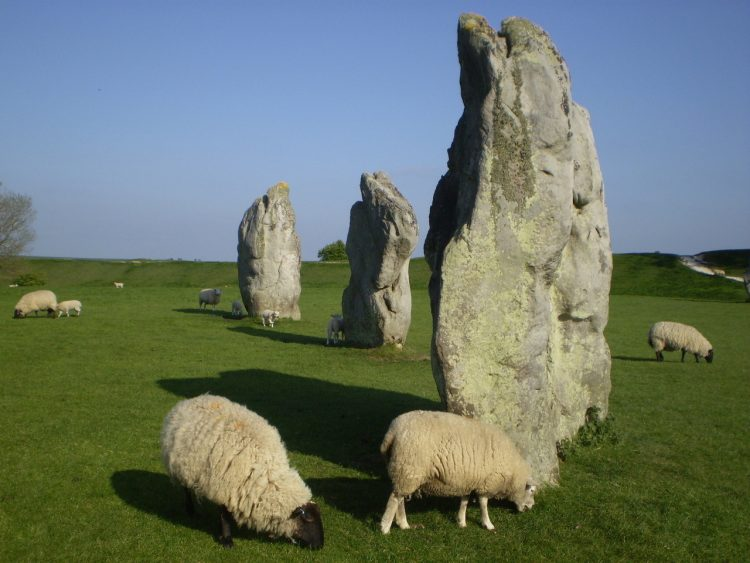
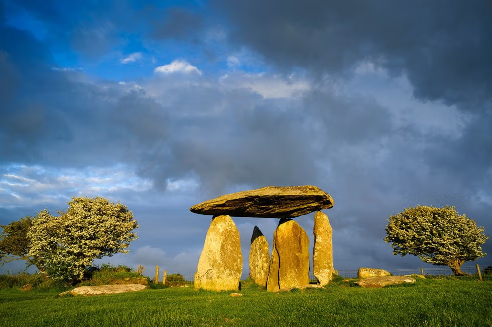
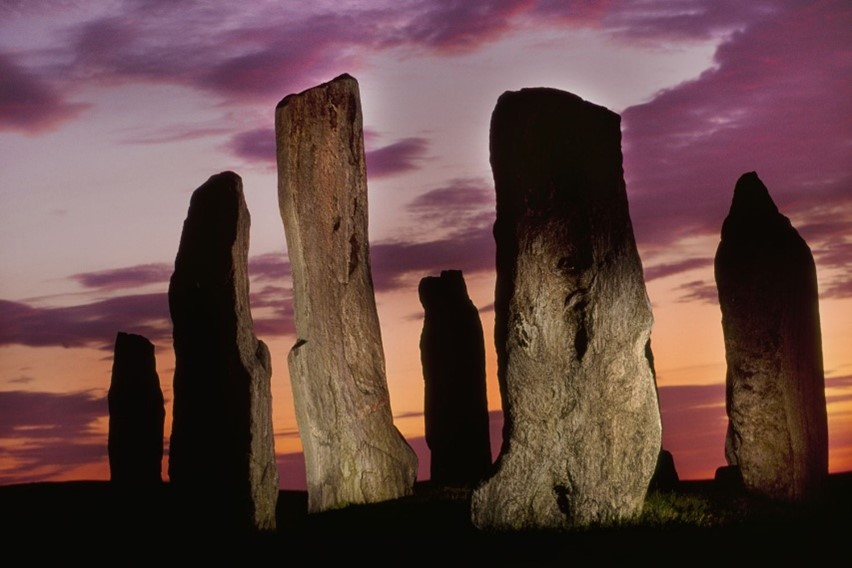
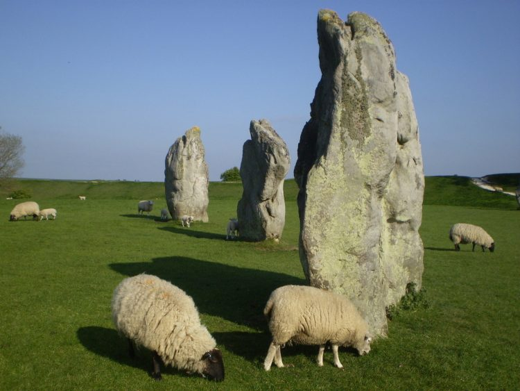
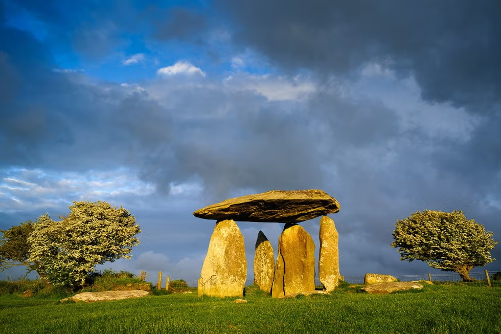
Een van de oudste neolitische nederzettingen bevond zich in Catalhöyük, Anatolië. De mensen woonden er in huizen van kleitegels en hout die rondom open binnenplaatsen geschaard lagen. Straten waren er niet want de huizen hadden geen deuren; blijkbaar kwam men door het dak naar binnen. (cursus prehistorie Sofie Dewinkeler, 2024-2025)
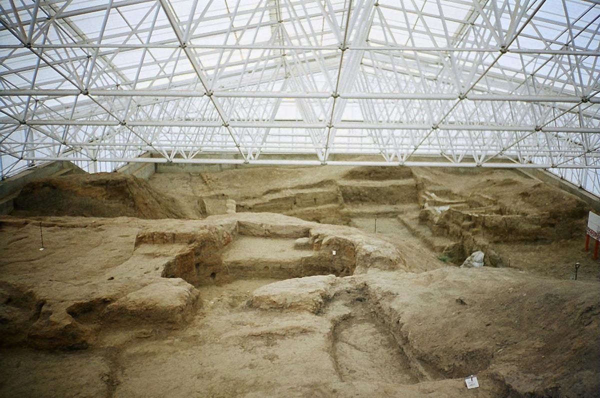
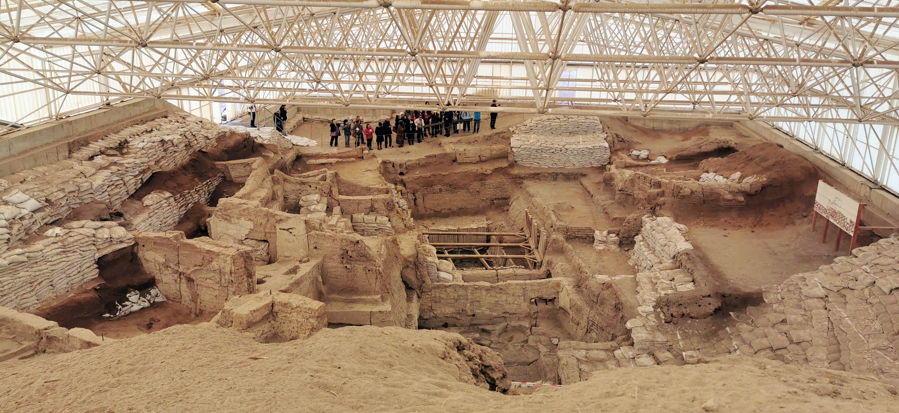
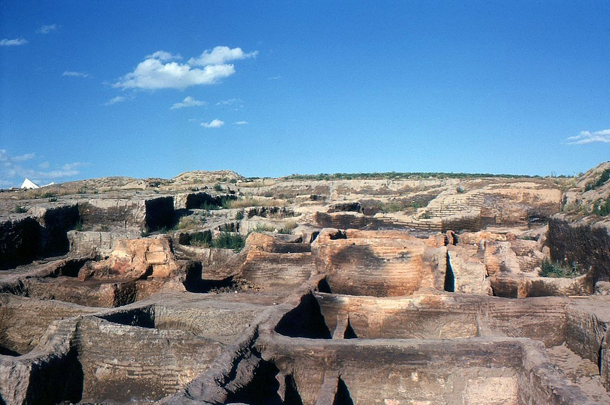
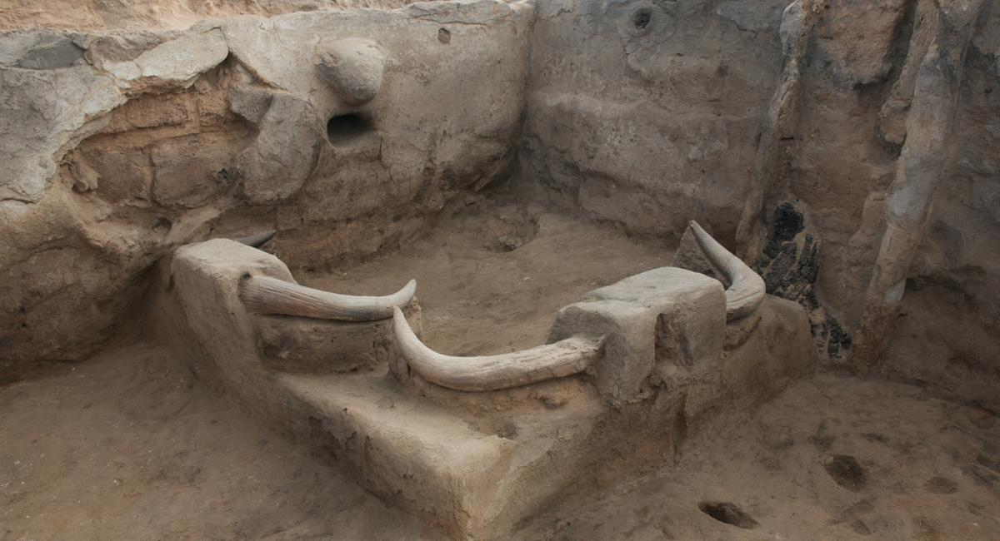
Skara Brae, een neolithische nederzetting in huidig Schotland
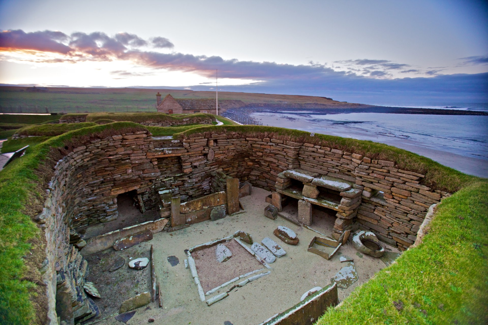
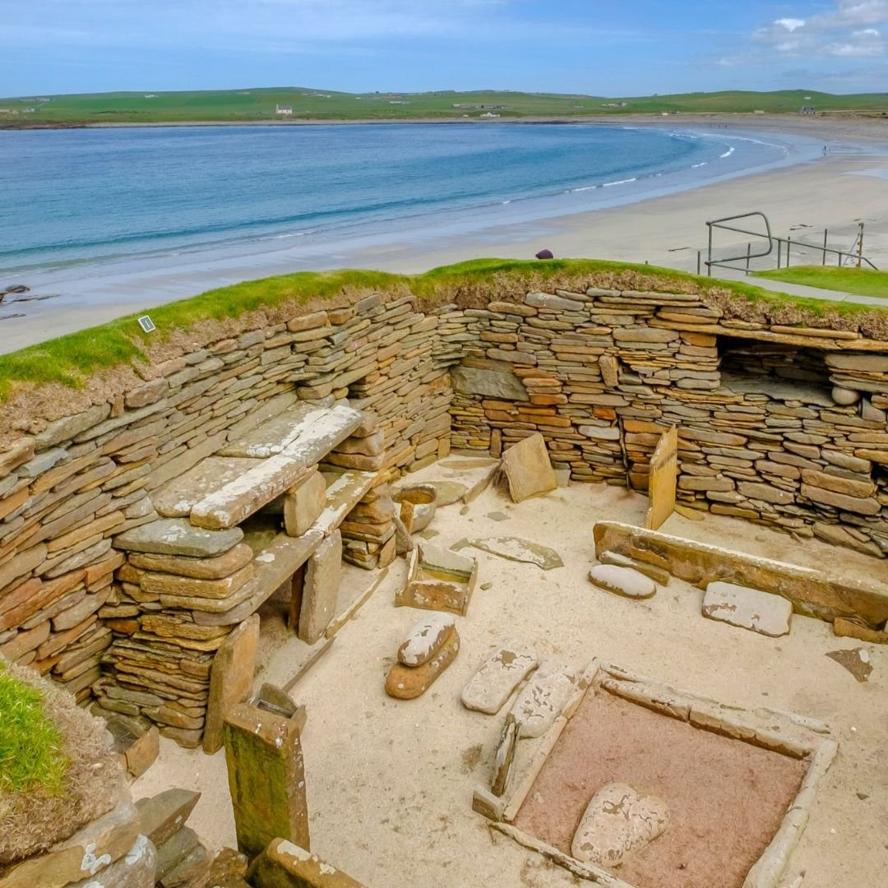
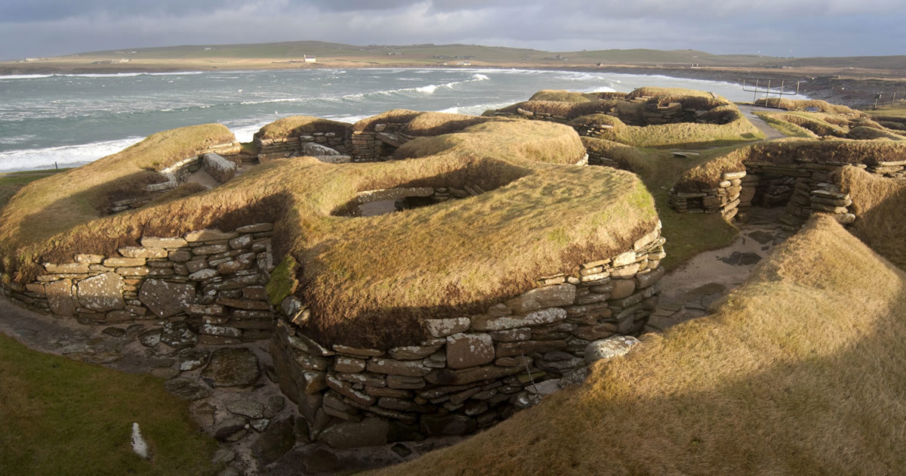
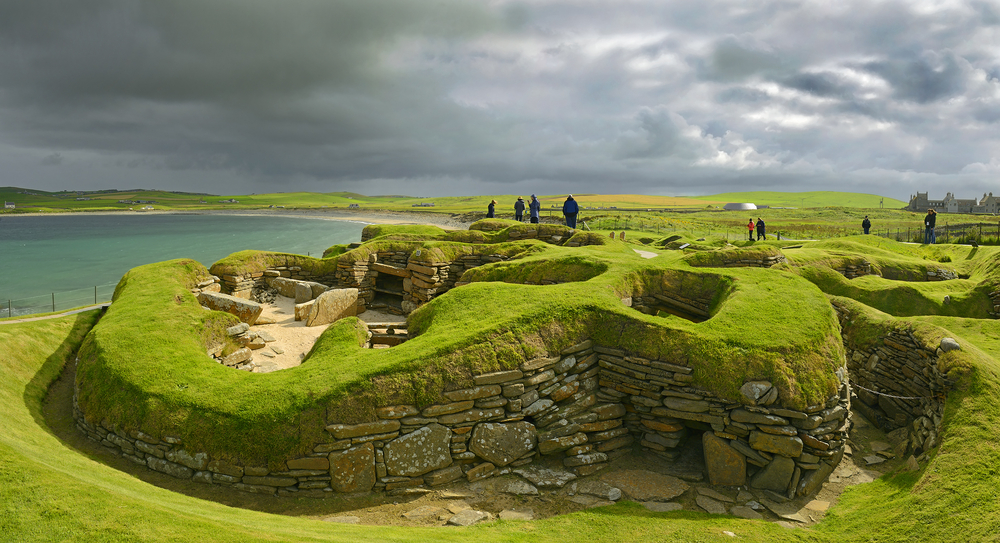